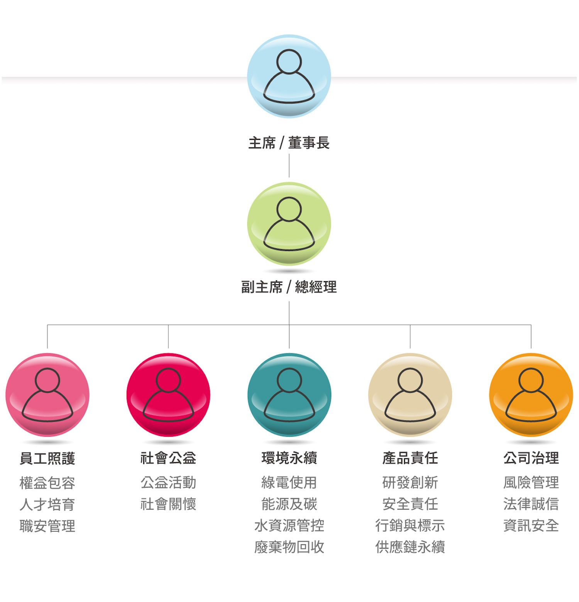

環境保護
自用電結構開始調整，逐步降低製造過程對環境的長期負擔。
GREEN & SUSTAINABLE
健康是我們的基石，環境保護、社會公益與企業永續，是驅使我們前行的責任與不變的方向。
OUR COMMITMENT
永續不是另外做的事，而是把每個既有決定，都放在更長的時間裡衡量。
SUSTAINABLE MANAGEMENT
百達醫設立永續經營委員會，讓環境、社會與治理不只停留在理念，而是有明確的分工、負責單位與推動節奏。

PHILANTHROPY
2019 年起，吳董事長本身即秉持社會關懷為己責，以個人名義進行各方慈善捐款；此舉也於 2020 年後，轉化為企業共同承擔的責任。
RENEWABLE ENERGY
百達醫因應環境永續理念，自 2025 年起從用電著手，以全球環境為己責，並實踐友善生活區域之發展。
自用電結構開始調整，逐步降低製造過程對環境的長期負擔。
延續自 2019 年的關懷行動，以企業資源持續投入在地與弱勢支持。
由永續經營委員會統籌推動，讓責任有組織、有分工、有進度。
WORK WITH BKE
如果永續是你的品牌重要主張，歡迎與我們討論原料選擇、包裝規劃與生產方式的可行方向。
與我們討論